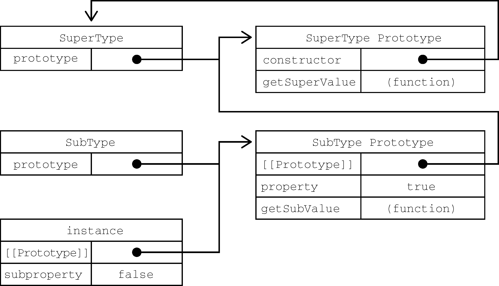

继承是面向对象编程中讨论最多的话题。很多面向对象语言都支持两种继承：接口继承和实现继承。前者只继承方法签名，后者继承实际的方法。接口继承在ECMAScript中是不可能的，因为函数没有签名。实现继承是ECMAScript唯一支持的继承方式，而这主要是通过原型链实现的。
ECMA-262把原型链定义为ECMAScript的主要继承方式。其基本思想就是通过原型继承多个引用类型的属性和方法。重温一下构造函数、原型和实例的关系：每个构造函数都有一个原型对象，原型有一个属性指回构造函数，而实例有一个内部指针指向原型。如果原型是另一个类型的实例呢？那就意味着这个原型本身有一个内部指针指向另一个原型，相应地另一个原型也有一个指针指向另一个构造函数。这样就在实例和原型之间构造了一条原型链。这就是原型链的基本构想。
实现原型链涉及如下代码模式：
function supertype() {
this.property = true;
}
supertype.prototype.getsupervalue = function() {
return this.property;
};
function subtype() {
this.subproperty = false;
}
// 继承supertype
subtype.prototype = new supertype();
subtype.prototype.getsubvalue = function () {
return this.subproperty;
};
let instance = new subtype();
console.log(instance.getsupervalue()); // true以上代码定义了两个类型：SuperType和SubType。这两个类型分别定义了一个属性和一个方法。这两个类型的主要区别是SubType通过创建SuperType的实例并将其赋值给自己的原型SubTtype.prototype实现了对SuperType的继承。这个赋值重写了SubType最初的原型，将其替换为SuperType的实例。这意味着SuperType实例可以访问的所有属性和方法也会存在于SubType.prototype。这样实现继承之后，代码紧接着又给SubType.prototype，也就是这个SuperType的实例添加了一个新方法。最后又创建了SubType的实例并调用了它继承的getSuperValue()方法。图8-4展示了子类的实例与两个构造函数及其对应的原型之间的关系。

图 8-4
这个例子中实现继承的关键，是SubType没有使用默认原型，而是将其替换成了一个新的对象。这个新的对象恰好是SuperType的实例。这样一来，SubType的实例不仅能从SuperType的实例中继承属性和方法，而且还与SuperType的原型挂上了钩。于是instance（通过内部的[[Prototype]]）指向SubType.prototype，而SubType.prototype（作为SuperType的实例又通过内部的[[Prototype]]）指向SuperType.prototype。注意，getSuperValue()方法还在SuperType.prototype对象上，而property属性则在SubType.prototype上。这是因为getSuperValue()是一个原型方法，而property是一个实例属性。SubType.prototype现在是SuperType的一个实例，因此property才会存储在它上面。还要注意，由于SubType.prototype的constructor属性被重写为指向SuperType，所以instance.constructor也指向SuperType。
原型链扩展了前面描述的原型搜索机制。我们知道，在读取实例上的属性时，首先会在实例上搜索这个属性。如果没找到，则会继承搜索实例的原型。在通过原型链实现继承之后，搜索就可以继承向上，搜索原型的原型。对前面的例子而言，调用instance.getSuperValue()经过了3步搜索：instance、SubType.prototype和SuperType.prototype，最后一步才找到这个方法。对属性和方法的搜索会一直持续到原型链的末端。
默认原型
实际上，原型链中还有一环。默认情况下，所有引用类型都继承自Object，这也是通过原型链实现的。任何函数的默认原型都是一个Object的实例，这意味着这个实例有一个内部指针指向Object.prototype。这也是为什么自定义类型能够继承包括toString()、valueOf()在内的所有默认方法的原因。因此前面的例子还有额外一层继承关系。图8-5展示了完整的原型链。
图 8-5
SubType继承SuperType，而SuperType继承Object。在调用instance.toString()时，实际上调用的是保存在Object.prototype上的方法。
原型与继承关系
原型与实例的关系可以通过两种方式来确定。第一种方式是使用instanceof操作符，如果一个实例的原型链中出现过相应的构造函数，则instanceof返回true。如下例所示：
console.log(instance instanceof object); // true
console.log(instance instanceof supertype); // true
console.log(instance instanceof subtype); // true从技术上讲，instance是Object、SuperType和SubType的实例，因为instance的原型链中包含这些构造函数的原型。结果就是instanceof对所有这些构造函数都返回true。
确定这种关系的第二种方式是使用isPrototypeOf()方法。原型链中的每个原型都可以调用这个方法，如下例所示，只要原型链中包含这个原型，这个方法就返回true：
console.log(object.prototype.isprototypeof(instance)); // true
console.log(supertype.prototype.isprototypeof(instance)); // true
console.log(subtype.prototype.isprototypeof(instance)); // true关于方法
子类有时候需要覆盖父类的方法，或者增加父类没有的方法。为此，这些方法必须在原型赋值之后再添加到原型上。来看下面的例子：
function supertype() {
this.property = true;
}
supertype.prototype.getsupervalue = function() {
return this.property;
};
function subtype() {
this.subproperty = false;
}
// 继承supertype
subtype.prototype = new supertype();
// 新方法
subtype.prototype.getsubvalue = function () {
return this.subproperty;
};
// 覆盖已有的方法
subtype.prototype.getsupervalue = function () {
return false;
};
let instance = new subtype();
console.log(instance.getsupervalue()); // false在上面的代码中，加粗的部分涉及两个方法。第一个方法getSubValue()是SubType的新方法，而第二个方法getSuperValue()是原型链上已经存在但在这里被遮蔽的方法。后面在SubType实例上调用getSuperValue()时调用的是这个方法。而SuperType的实例仍然会调用最初的方法。重点在于上述两个方法都是在把原型赋值为SuperType的实例之后定义的。
另一个要理解的重点是，以对象字面量方式创建原型方法会破坏之前的原型链，因为这相当于重写了原型链。下面是一个例子：
function supertype() {
this.property = true;
}
supertype.prototype.getsupervalue = function() {
return this.property;
};
function subtype() {
this.subproperty = false;
}
// 继承supertype
subtype.prototype = new supertype();
// 通过对象字面量添加新方法，这会导致上一行无效
subtype.prototype = {
getsubvalue() {
return this.subproperty;
},
someothermethod() {
return false;
}
};
let instance = new subtype();
console.log(instance.getsupervalue()); // 出错！在这段代码中，子类的原型在被赋值为SuperType的实例后，又被一个对象字面量覆盖了。覆盖后的原型是一个Object的实例，而不再是SuperType的实例。因此之前的原型链就断了。SubType和SuperType之间也没有关系了。
原型链的问题
原型链虽然是实现继承的强大工具，但它也有问题。主要问题出现在原型中包含引用值的时候。前面在谈到原型的问题时也提到过，原型中包含的引用值会在所有实例间共享，这也是为什么属性通常会在构造函数中定义而不会定义在原型上的原因。在使用原型实现继承时，原型实际上变成了另一个类型的实例。这意味着原先的实例属性摇身一变成为了原型属性。下面的例子揭示了这个问题：
function supertype() {
this.colors = ["red", "blue", "green"];
}
function subtype() {}
// 继承supertype
subtype.prototype = new supertype();
let instance1 = new subtype();
instance1.colors.push("black");
console.log(instance1.colors); // "red,blue,green,black"
let instance2 = new subtype();
console.log(instance2.colors); // "red,blue,green,black"在这个例子中，SuperType构造函数定义了一个colors属性，其中包含一个数组（引用值）。每个SuperType的实例都会有自己的colors属性，包含自己的数组。但是，当SubType通过原型继承SuperType后，SubType.prototype变成了SuperType的一个实例，因而也获得了自己的colors属性。这类似于创建了SubType.prototype.colors属性。最终结果是，SubType的所有实例都会共享这个colors属性。这一点通过instance1.colors上的修改也能反映到instance2.colors上就可以看出来。
原型链的第二个问题是，子类型在实例化时不能给父类型的构造函数传参。事实上，我们无法在不影响所有对象实例的情况下把参数传进父类的构造函数。再加上之前提到的原型中包含引用值的问题，就导致原型链基本不会被单独使用。
为了解决原型包含引用值导致的继承问题，一种叫作“盗用构造函数”（constructor stealing）的技术在开发社区流行起来（这种技术有时也称作“对象伪装”或“经典继承”）。基本思路很简单：在子类构造函数中调用父类构造函数。因为毕竟函数就是在特定上下文中执行代码的简单对象，所以可以使用apply()和call()方法以新创建的对象为上下文执行构造函数。来看下面的例子：
function supertype() {
this.colors = ["red", "blue", "green"];
}
function subtype() {
// 继承supertype
supertype.call(this);
}
let instance1 = new subtype();
instance1.colors.push("black");
console.log(instance1.colors); // "red,blue,green,black"
let instance2 = new subtype();
console.log(instance2.colors); // "red,blue,green"示例中加粗的代码展示了盗用构造函数的调用。通过使用call()（或apply()）方法，SuperType构造函数在为SubType的实例创建的新对象的上下文中执行了。这相当于新的SubType对象上运行了SuperType()函数中的所有初始化代码。结果就是每个实例都会有自己的colors属性。
传递参数
相比于使用原型链，盗用构造函数的一个优点就是可以在子类构造函数中向父类构造函数传参。来看下面的例子：
function supertype(name){
this.name = name;
}
function subtype() {
// 继承supertype并传参
supertype.call(this, "nicholas");
// 实例属性
this.age = 29;
}
let instance = new subtype();
console.log(instance.name); // "nicholas";
console.log(instance.age); // 29在这个例子中，SuperType构造函数接收一个参数name，然后将它赋值给一个属性。在SubType构造函数中调用SuperType构造函数时传入这个参数，实际上会在SubType的实例上定义name属性。为确保SuperType构造函数不会覆盖SubType定义的属性，可以在调用父类构造函数之后再给子类实例添加额外的属性。
盗用构造函数的问题
盗用构造函数的主要缺点，也是使用构造函数模式自定义类型的问题：必须在构造函数中定义方法，因此函数不能重用。此外，子类也不能访问父类原型上定义的方法，因此所有类型只能使用构造函数模式。由于存在这些问题，盗用构造函数基本上也不能单独使用。
组合继承（有时候也叫伪经典继承）综合了原型链和盗用构造函数，将两者的优点集中了起来。基本的思路是使用原型链继承原型上的属性和方法，而通过盗用构造函数继承实例属性。这样既可以把方法定义在原型上以实现重用，又可以让每个实例都有自己的属性。来看下面的例子：
function supertype(name){
this.name = name;
this.colors = ["red", "blue", "green"];
}
supertype.prototype.sayname = function() {
console.log(this.name);
};
function subtype(name, age){
// 继承属性
supertype.call(this, name);
this.age = age;
}
// 继承方法
subtype.prototype = new supertype();
subtype.prototype.sayage = function() {
console.log(this.age);
};
let instance1 = new subtype("nicholas", 29);
instance1.colors.push("black");
console.log(instance1.colors); // "red,blue,green,black"
instance1.sayname(); // "nicholas";
instance1.sayage(); // 29
let instance2 = new subtype("greg", 27);
console.log(instance2.colors); // "red,blue,green"
instance2.sayname(); // "greg";
instance2.sayage(); // 27在这个例子中，SuperType构造函数定义了两个属性，name和colors，而它的原型上也定义了一个方法叫sayName()。SubType构造函数调用了SuperType构造函数，传入了name参数，然后又定义了自己的属性age。此外，SubType.prototype也被赋值为SuperType的实例。原型赋值之后，又在这个原型上添加了新方法sayAge()。这样，就可以创建两个SubType实例，让这两个实例都有自己的属性，包括colors，同时还共享相同的方法。
组合继承弥补了原型链和盗用构造函数的不足，是JavaScript中使用最多的继承模式。而且组合继承也保留了instanceof操作符和isPrototypeOf()方法识别合成对象的能力。
2006年，Douglas Crockford写了一篇文章：《JavaScript中的原型式继承》（“Prototypal Inheritance in JavaScript”）。这篇文章介绍了一种不涉及严格意义上构造函数的继承方法。他的出发点是即使不自定义类型也可以通过原型实现对象之间的信息共享。文章最终给出了一个函数：
function object(o) {
function f() {}
f.prototype = o;
return new f();
}这个object()函数会创建一个临时构造函数，将传入的对象赋值给这个构造函数的原型，然后返回这个临时类型的一个实例。本质上，object()是对传入的对象执行了一次浅复制。来看下面的例子：
let person = {
name: "nicholas",
friends: ["shelby", "court", "van"]
};
let anotherperson = object(person);
anotherperson.name = "greg";
anotherperson.friends.push("rob");
let yetanotherperson = object(person);
yetanotherperson.name = "linda";
yetanotherperson.friends.push("barbie");
console.log(person.friends); // "shelby,court,van,rob,barbie"Crockford推荐的原型式继承适用于这种情况：你有一个对象，想在它的基础上再创建一个新对象。你需要把这个对象先传给object()，然后再对返回的对象进行适当修改。在这个例子中，person对象定义了另一个对象也应该共享的信息，把它传给object()之后会返回一个新对象。这个新对象的原型是person，意味着它的原型上既有原始值属性又有引用值属性。这也意味着person.friends不仅是person的属性，也会跟anotherPerson和yetAnotherPerson共享。这里实际上克隆了两个person。
ECMAScript 5通过增加Object.create()方法将原型式继承的概念规范化了。这个方法接收两个参数：作为新对象原型的对象，以及给新对象定义额外属性的对象（第二个可选）。在只有一个参数时，Object.create()与这里的object()方法效果相同：
let person = {
name: "nicholas",
friends: ["shelby", "court", "van"]
};
let anotherperson = object.create(person);
anotherperson.name = "greg";
anotherperson.friends.push("rob");
let yetanotherperson = object.create(person);
yetanotherperson.name = "linda";
yetanotherperson.friends.push("barbie");
console.log(person.friends); // "shelby,court,van,rob,barbie"
Object.create()的第二个参数与Object.defineProperties()的第二个参数一样：每个新增属性都通过各自的描述符来描述。以这种方式添加的属性会遮蔽原型对象上的同名属性。比如：
let person = {
name: "nicholas",
friends: ["shelby", "court", "van"]
};
let anotherperson = object.create(person, {
name: {
value: "greg"
}
});
console.log(anotherperson.name); // "greg"原型式继承非常适合不需要单独创建构造函数，但仍然需要在对象间共享信息的场合。但要记住，属性中包含的引用值始终会在相关对象间共享，跟使用原型模式是一样的。
与原型式继承比较接近的一种继承方式是寄生式继承（parasitic inheritance），也是Crockford首倡的一种模式。寄生式继承背后的思路类似于寄生构造函数和工厂模式：创建一个实现继承的函数，以某种方式增强对象，然后返回这个对象。基本的寄生继承模式如下：
function createanother(original){
let clone = object(original); // 通过调用函数创建一个新对象
clone.sayhi = function() { // 以某种方式增强这个对象
console.log("hi");
};
return clone; // 返回这个对象
}在这段代码中，createAnother()函数接收一个参数，就是新对象的基准对象。这个对象original会被传给object()函数，然后将返回的新对象赋值给clone。接着给clone对象添加一个新方法sayHi()。最后返回这个对象。可以像下面这样使用createAnother()函数：
let person = {
name: "nicholas",
friends: ["shelby", "court", "van"]
};
let anotherperson = createanother(person);
anotherperson.sayhi(); // "hi"这个例子基于person对象返回了一个新对象。新返回的anotherPerson对象具有person的所有属性和方法，还有一个新方法叫sayHi()。
寄生式继承同样适合主要关注对象，而不在乎类型和构造函数的场景。object()函数不是寄生式继承所必需的，任何返回新对象的函数都可以在这里使用。
注意 通过寄生式继承给对象添加函数会导致函数难以重用，与构造函数模式类似。
组合继承其实也存在效率问题。最主要的效率问题就是父类构造函数始终会被调用两次：一次在是创建子类原型时调用，另一次是在子类构造函数中调用。本质上，子类原型最终是要包含超类对象的所有实例属性，子类构造函数只要在执行时重写自己的原型就行了。再来看一看这个组合继承的例子：
function supertype(name) {
this.name = name;
this.colors = ["red", "blue", "green"];
}
supertype.prototype.sayname = function() {
console.log(this.name);
};
function subtype(name, age){
supertype.call(this, name); // 第二次调用supertype()
this.age = age;
}
subtype.prototype = new supertype(); // 第一次调用supertype()
subtype.prototype.constructor = subtype;
subtype.prototype.sayage = function() {
console.log(this.age);
};代码中加粗的部分是调用SuperType构造函数的地方。在上面的代码执行后，SubType.prototype上会有两个属性：name和colors。它们都是SuperType的实例属性，但现在成为了SubType的原型属性。在调用SubType构造函数时，也会调用SuperType构造函数，这一次会在新对象上创建实例属性name和colors。这两个实例属性会遮蔽原型上同名的属性。图8-6展示了这个过程。
图 8-6
如图8-6所示，有两组name和colors属性：一组在实例上，另一组在SubType的原型上。这是调用两次SuperType构造函数的结果。好在有办法解决这个问题。
寄生式组合继承通过盗用构造函数继承属性，但使用混合式原型链继承方法。基本思路是不通过调用父类构造函数给子类原型赋值，而是取得父类原型的一个副本。说到底就是使用寄生式继承来继承父类原型，然后将返回的新对象赋值给子类原型。寄生式组合继承的基本模式如下所示：
function inheritprototype(subtype, supertype) {
let prototype = object(supertype.prototype); // 创建对象
prototype.constructor = subtype; // 增强对象
subtype.prototype = prototype; // 赋值对象
}这个inheritPrototype()函数实现了寄生式组合继承的核心逻辑。这个函数接收两个参数：子类构造函数和父类构造函数。在这个函数内部，第一步是创建父类原型的一个副本。然后，给返回的prototype对象设置constructor属性，解决由于重写原型导致默认constructor丢失的问题。最后将新创建的对象赋值给子类型的原型。如下例所示，调用inheritPrototype()就可以实现前面例子中的子类型原型赋值：
function supertype(name) {
this.name = name;
this.colors = ["red", "blue", "green"];
}
supertype.prototype.sayname = function() {
console.log(this.name);
};
function subtype(name, age) {
supertype.call(this, name);
this.age = age;
}
inheritprototype(subtype, supertype);
subtype.prototype.sayage = function() {
console.log(this.age);
};这里只调用了一次SuperType构造函数，避免了SubType.prototype上不必要也用不到的属性，因此可以说这个例子的效率更高。而且，原型链仍然保持不变，因此instanceof操作符和isPrototypeOf()方法正常有效。寄生式组合继承可以算是引用类型继承的最佳模式。